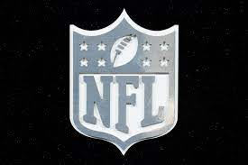

All Starting Wide Recievers , Their All Time Recieving Yards, and Their Teams
Atlanta Falcons
Drake London, 1,195 yards
Arizona Cardinals
Marquise Brown, 3,404 yards
Baltimore Ravens
Odell Beckham Jr., 7,480 yards
Buffalo Bills
Stefon Diggs, 9,432 yards
Carolina Panthers
Adam Thielen, 7,191 yards
Chicago Bears
D.J. Moore, 5,783 yards
Cincinnati Bengals
Ja'Marr Chase, 3,057 yards
Cleveland Browns
Amari Cooper, 8,603 yards
Dallas Cowboys
CeeDee Lamb, 3,871 yards
Denver Broncos
Jerry Juedy, 2,517 yards
Detroit Lions
Amon-ra St.Brown, 2,258 yards
Green Bay Packers
Christian Watson, 727 yards
Houston Texans
Nico Collins, 1,474 yards
Indianapolis Colts
Michael Pittman Jr., 2,916 yards
Jacksonville Jaguars
Calvin Ridley, 3,705 yards
Kansas City Chiefs
Kadarius Toney, 683 yards
Las Vegas Raiders
Davante Adams, 10,108 yards
Los Angles Chargers
Keenan Allen, 9,806 yards
Los Angles Rams
Cooper Kupp, 6,595 yards
Miami Dolphins
Tyreek Hill, 9,154 yards
Minnesota Vikings
Justin Jefferson, 5,396 yards
New England Patriots
JuJu Smith-Schuster, 4,874 yards
New Orleans Saints
Michael Thomas, 6,450 yards
New York Giants
Parris Campbell, 1,068 yards
New York Jets
Garrett Wilson, 1,472 yards
Philadelphia Eagles
A.J. Brown, 5,163 yards
Pittsburgh Steelers
Calvin Austin III, 143 yards
San Francisco 49ers
Deebo Samuel, 3,532 yards
Seattle Seahawks
D.K. Metcalf, 4,555 yards
Tampa Bay Buccaneers
Mike Evans, 10,811 yards
Tennesse Titans
DeAndre Hopkins, 11,674 yards
Washington Commanders
Terry McLaurin, 4,623 yards